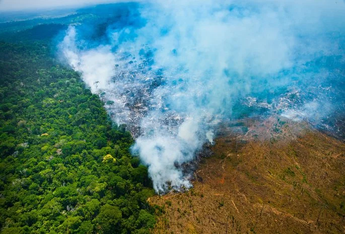
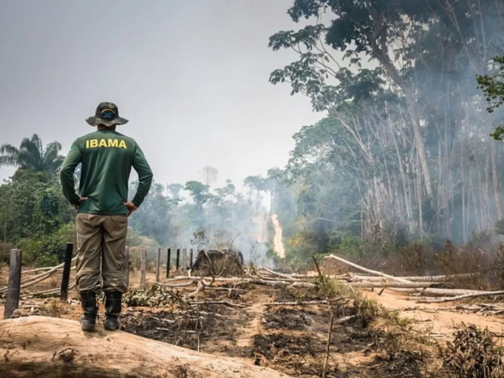
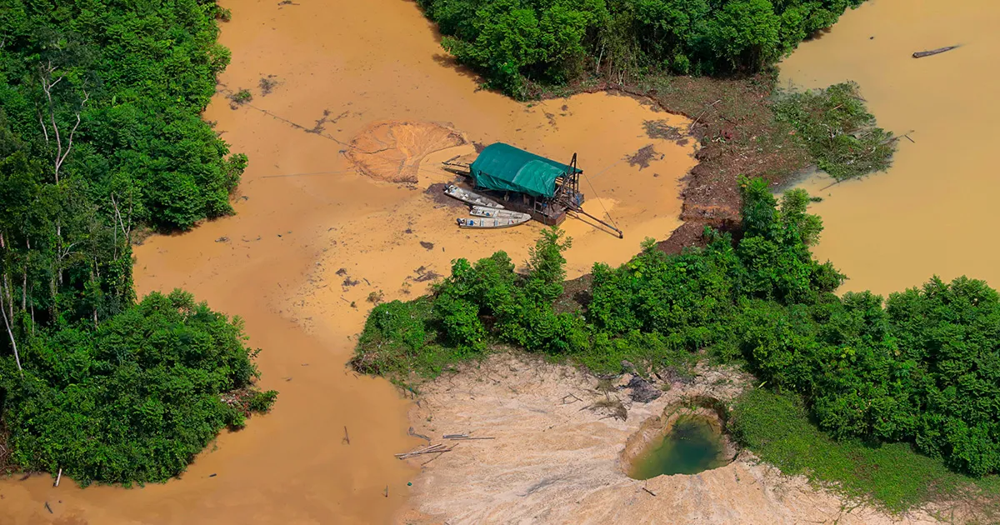

Exploração na Amazônia
  Desmatamento e Agricultura:
O desmatamento na Amazônia é uma das formas mais alarmantes de exploração. A expansão da agricultura, especialmente a criação de gado e o cultivo de soja, tem resultado na derrubada de vastas áreas de floresta tropical. Esse processo é muitas vezes realizado de forma ilegal e descontrolada, causando danos irreparáveis à biodiversidade e ao equilíbrio ambiental da região.

Mineração Ilegal:
A mineração ilegal é outra grave ameaça à Amazônia. A busca por ouro, diamantes e outros minerais preciosos tem levado à destruição de grandes extensões de floresta e à contaminação dos rios com mercúrio e outros produtos químicos tóxicos. Além dos impactos ambientais, essa atividade ilegal também está associada à violência e à exploração de comunidades locais.
Construção de Estradas e Infraestrutura:
A construção de estradas e outras obras de infraestrutura na Amazônia também contribui para a exploração da região. Esses projetos muitas vezes abrem caminho para o desmatamento, a ocupação ilegal de terras e o avanço de atividades predatórias, como a mineração e o desmatamento ilegais. Além disso, a expansão da infraestrutura pode fragmentar habitats naturais e aumentar a pressão sobre as populações indígenas e tradicionais.
Desafios para a Conservação:
Enfrentar a exploração na Amazônia é um desafio complexo que requer ação coordenada em várias frentes. É necessário combater a impunidade dos responsáveis pela exploração ilegal, fortalecer a fiscalização e o monitoramento das áreas protegidas, promover alternativas econômicas sustentáveis para as comunidades locais e buscar formas de conciliar o desenvolvimento econômico com a conservação ambiental. A proteção da Amazônia é essencial não apenas para preservar sua biodiversidade única, mas também para garantir o bem-estar das futuras gerações e o equilíbrio climático global.